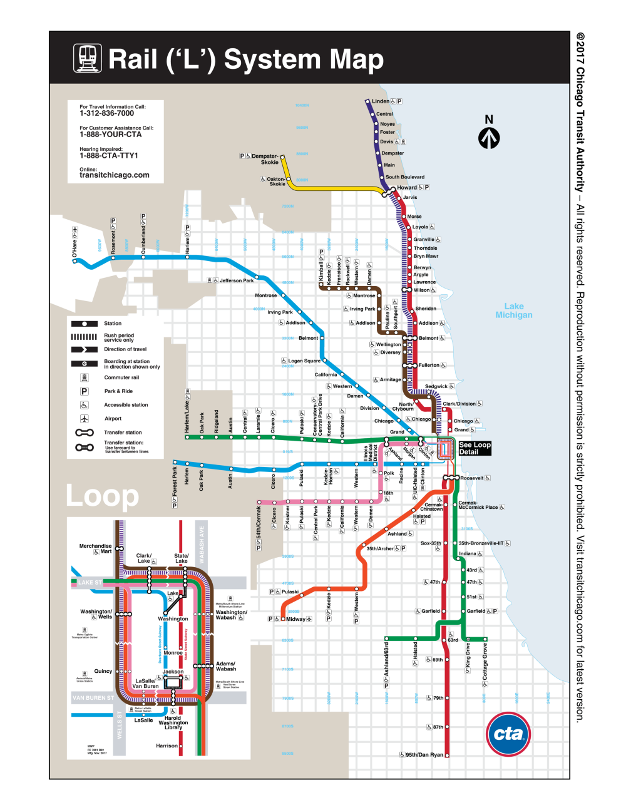

Summary: CTA Analysis

The City of Chicago provides a huge amount of open data for to explore though the Chicago Data Portal .
The purpose of this project was to analyze the flux of passengers over a certain period of time to answer the questions below:
1) Which of the stations in my neighboorhood are more popular?
2) What are the most popular stations overall (and least popular)?
3) What part of the city has the most ridership?
4) Are there any interesting trends in ridership I can see over time?
This project is a modification of a Medium post on CTA rides.
After assembling the datasets, I used gmaps with heatmap layer to plot the density of CTA riders. Factors we looked at included: overall number of passengers per station and average weekend and weekdays rides. This site provides the source data and visualizations created as part of the analysis.Visualizations